Lista de itens de Valheim
Onde se encontra, em que bioma e com que ferramenta? Esta lista abrange 864 itens – materiais, comida, armas, armaduras e troféus. Para cada item vês de onde vem (árvores, jazidas, criaturas, baús, mercadores), a ferramenta necessária, a receita e para que serve. Todos os dados são lidos diretamente dos ficheiros do jogo (versão 1.0.21).
Nenhum item encontrado.
Materiais
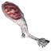
Carne de alce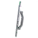
Coletor dvergr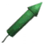
Fogo de Artifício Verde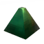
Jade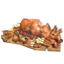
Javali do prado assado inteiro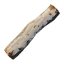
Madeira Nórdica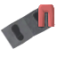
Molde: Calças do Protetor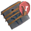
Peça fundida: Elmo do Protetor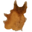
Pele de veado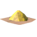
Pimenta em pó das montanhas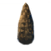
Pinha de abeto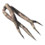
Raízes de Writhan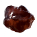
Resina de carvão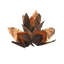
Sementes de faia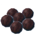
Sementes de nabo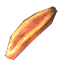
Tendão de esquilo curadoComida e poções
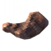
Carne de frango cozida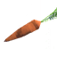
Cenoura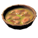
Ensopado de serpente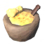
Marmelada picante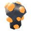
Sopra-fumaçaArmas, ferramentas e munições
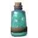
Bomba-bolha: Massa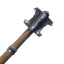
Clava de ferro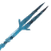
Divisora tempestuosa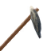
Enxada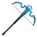
Estripadora tempestuosa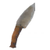
Faca de sílex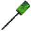
Klossen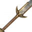
Krom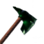
Machado de metal preto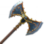
Machado grande Nórdico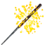
Vela EstrelinhaArmaduras, escudos e acessórios
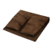
Calças de trapos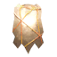
Capa de pele de alce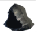
Capuz de Fenris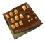
Couraça de chapa de bronze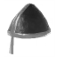
Elmo de ferro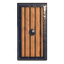
Escudo torre de madeira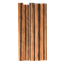
Escudo torre de madeira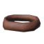
Faixa de cabeça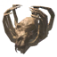
Gaiola de ossos malditos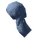
Lenço azul amarrado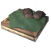
Túnica de colheita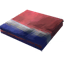
Túnica vermelha simplesTroféus
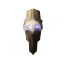
Troféu Anão Cinzento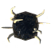
Troféu Betumor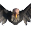
Troféu de uruvul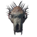
Troféu de Zomburso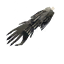
Troféu FenringPeixes e diversos
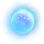
Lágrima de dragão